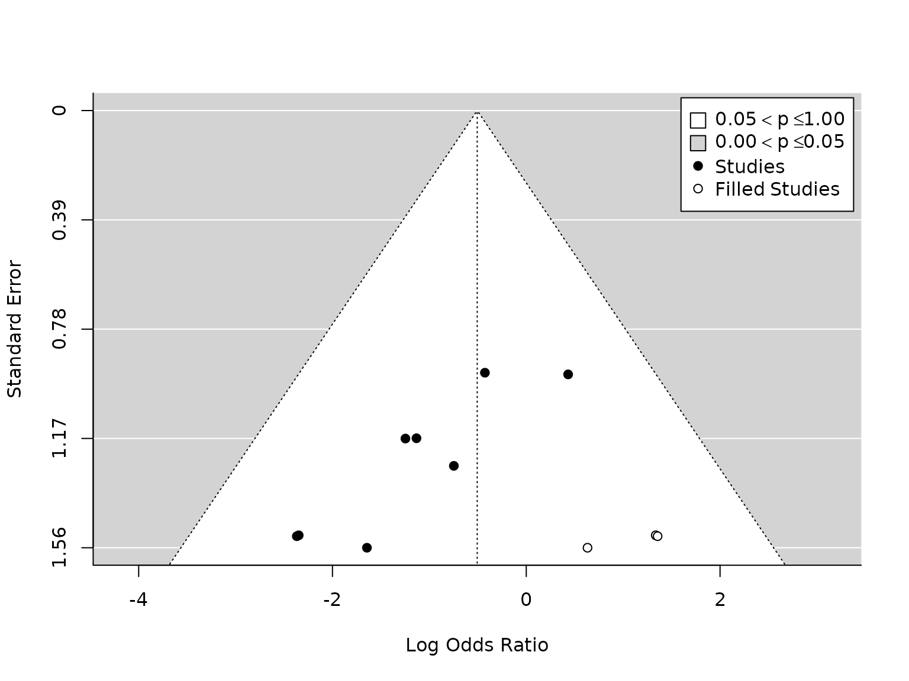
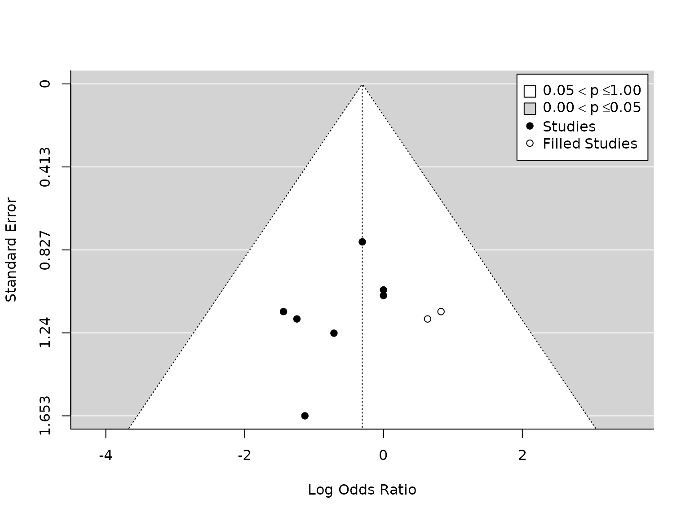

Primary_outcomes
Primary_outcomes.RmdLoad data
#library(librarian)
#librarian::shelf(here, readxl, metafor, quiet = TRUE)
dat <- readxl::read_excel(here::here("data", "Dex_metan.xlsx"),
range = "B3:T11",
col_names=c("study", "n1i", "n2i",
"ai_atel", "bi_atel", "ci_atel", "di_atel",
"ai_pneu", "bi_pneu", "ci_pneu", "di_pneu",
"ai_hypo", "bi_hypo", "ci_hypo", "di_hypo",
"ai_ards", "bi_ards", "ci_ards", "di_ards")
)
print(dat, width=Inf)
#> # A tibble: 9 × 19
#> study n1i n2i ai_atel bi_atel ci_atel di_atel ai_pneu bi_pneu
#> <chr> <dbl> <dbl> <dbl> <dbl> <dbl> <dbl> <dbl> <dbl>
#> 1 Shi et al 60 60 1 3 59 57 3 4
#> 2 Xie et al 58 58 0 2 58 56 1 4
#> 3 Meng et al 20 20 1 2 19 18 2 2
#> 4 Zhang et al 28 28 0 4 28 24 NA NA
#> 5 Wu et al 30 30 NA NA NA NA 0 1
#> 6 Jannu et al 40 40 3 2 37 38 2 2
#> 7 Lee et al (1) 25 25 0 4 25 21 NA NA
#> 8 Lee et al (2) 50 50 2 3 48 47 1 2
#> 9 Zhou et al 59 53 1 3 58 50 1 3
#> ci_pneu di_pneu ai_hypo bi_hypo ci_hypo di_hypo ai_ards bi_ards ci_ards
#> <dbl> <dbl> <dbl> <dbl> <dbl> <dbl> <dbl> <dbl> <dbl>
#> 1 57 56 4 12 56 48 1 2 59
#> 2 57 54 1 4 57 54 NA NA NA
#> 3 18 18 NA NA NA NA NA NA NA
#> 4 NA NA NA NA NA NA 0 1 28
#> 5 30 29 NA NA NA NA NA NA NA
#> 6 38 38 NA NA NA NA NA NA NA
#> 7 NA NA NA NA NA NA 0 1 25
#> 8 49 48 NA NA NA NA NA NA NA
#> 9 58 50 1 4 58 49 NA NA NA
#> di_ards
#> <dbl>
#> 1 58
#> 2 NA
#> 3 NA
#> 4 27
#> 5 NA
#> 6 NA
#> 7 24
#> 8 NA
#> 9 NARemoved final row, containing no data (for Lee et al.)
Main Analysis
ARDS
dat.ards <- metafor::escalc(measure="OR",
ai=ai_ards,
bi=bi_ards,
ci=ci_ards,
di=di_ards,
data=dat,
slab = study)
pm.ards <- metafor::rma(yi, vi, data=dat.ards, method="PM")
metafor::forest(pm.ards,
atransf=exp,
at=log(c(0.002, 0.01, 0.03, 0.1, 0.4, 2, 5, 10)))Note: n=3 here, but n=2 in metafor::forest plot in PDF. Which is correct?
Sensitivity Analysis
HKSJ correction results in narrower CIs (plots not shown):
pmhk.atelectasis <- metafor::rma(yi, vi, data=dat.atelectasis, method="PM", test="knha")
metafor::forest(pmhk.atelectasis,
atransf=exp,
at=log(c(0.002, 0.01, 0.03, 0.1, 0.4, 2, 5, 10)))
pmhk.pneumonia <- metafor::rma(yi, vi, data=dat.pneumonia, method="PM", test="knha")
metafor::forest(pmhk.pneumonia,
atransf=exp,
at=log(c(0.002, 0.01, 0.03, 0.1, 0.4, 2, 5, 10)))
pmhk.hypoxemia <- metafor::rma(yi, vi, data=dat.hypoxemia, method="PM", test="knha")
metafor::forest(pmhk.hypoxemia,
atransf=exp,
at=log(c(0.002, 0.01, 0.03, 0.1, 0.4, 2, 5, 10)))
pmhk.ards <- metafor::rma(yi, vi, data=dat.ards, method="PM", test="knha")
metafor::forest(pmhk.ards,
atransf=exp,
at=log(c(0.002, 0.01, 0.03, 0.1, 0.4, 2, 5, 10)))Funnel plots
# Atelectasis:
### carry out trim-and-fill analysis
taf.atelectasis <- metafor::trimfill(pm.atelectasis)
### draw funnel plot with missing studies filled in
metafor::funnel(taf.atelectasis, legend=TRUE)
# OR and CI:
exp(taf.atelectasis$beta)
#> [,1]
#> intrcpt 0.6028603
c(exp(taf.atelectasis$beta-taf.atelectasis$se), exp(taf.atelectasis$beta+taf.atelectasis$se))
#> [1] 0.4121106 0.8819004
# Pneumonia
taf.pneumonia <- metafor::trimfill(pm.pneumonia)
metafor::funnel(taf.pneumonia, legend=TRUE)
# OR and CI:
exp(taf.pneumonia$beta)
#> [,1]
#> intrcpt 0.736445
c(exp(taf.pneumonia$beta-taf.pneumonia$se), exp(taf.pneumonia$beta+taf.pneumonia$se))
#> [1] 0.5111027 1.0611392Trim-and-fill analysis on the atelectasis meta-analysis data estimates that there are three studies missing. Removing the most extreme studies until there is no asymmetry results in a summary estimate of 0.60 (95% CI (0.41, 0.88)), which is smaller but still statistically significant. However, we acknowledge that this procedure the total number of studies is small,